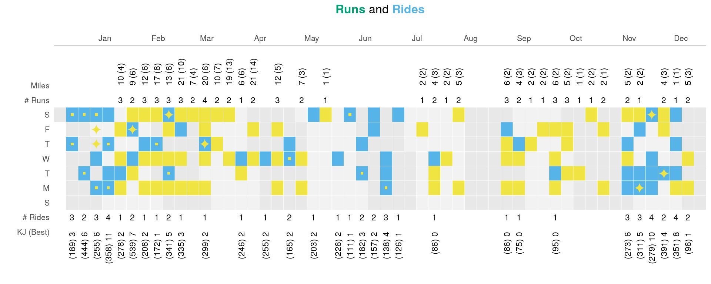
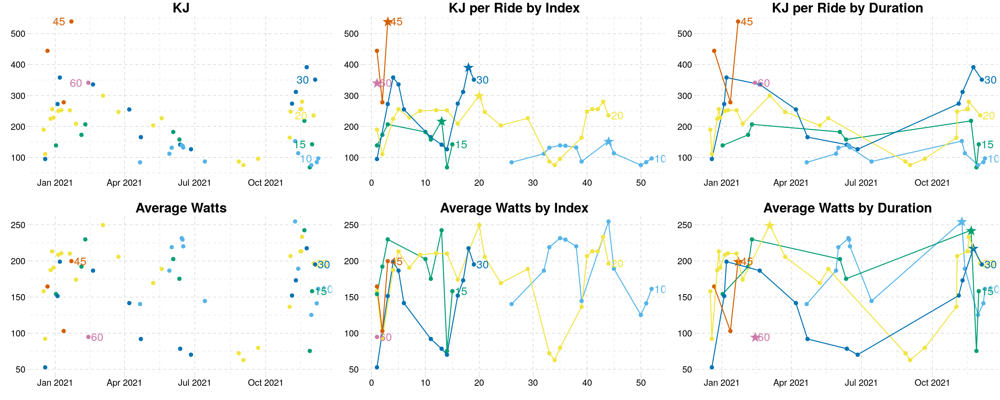

Goals:
authenticate(username = 'bryan.g.whiting@gmail.com',
password = 'Silvermin3!peloton')
{
"session_id": "324ef9a42f884ba8bd4231a1be6f9358",
"user_id": "4def4b0c8edb47369a70a920bf96a6dd",
"pubsub_session": {
}
}
my_strava_id <- 57863625
app_name <- 'workout_dashboard' # chosen by user
app_client_id <- '74379' # an integer, assigned by Strava
app_secret <- '4fcae0e77f870e4464a63933dffda899a0f32ca8' # an alphanumeric secret, assigned by Strava
# create the authentication token
stoken <- httr::config(token = strava_oauth(app_name, app_client_id, app_secret, app_scope="activity:read_all", cache=TRUE))
# TODO: open localhost 1410 port to the docker
# stoken <- httr::config(token = readRDS('~/data/.httr-oauth')[[1]])
# Peloton data
df_rides_raw <- load_peloton_workouts()
df_rides <- df_rides_raw %>%
filter(metrics_type == 'cycling') %>%
filter(total_work/1000 > 30) %>% # not real workout
select(
date,
duration,
kj,
rank,
is_total_work_personal_record,
avg_watts,
pr_local,
pr_global
) %>%
mutate_dates()
# Strava
df_runs <- load_strava_data(stoken = stoken)
# Plot days active
all_days <- seq(floor_date(Sys.Date() - 364, unit='week'),
floor_date(Sys.Date() + 14, unit='week') - 1,
by="days")
df_days <- tibble(date = all_days) %>%
mutate_dates()
# Records:
df_ride_records <- df_rides %>%
filter(pr_local | pr_global)
df_run_records <- df_runs %>%
filter(pr_local | pr_global)
df_runs <- df_runs %>%
filter(type == 'Run') %>%
mutate_dates()
# CALEDNAR PLOT: https://www.royfrancis.com/calendar-plot-with-ggplot2/
# TODO: find a way to outline left side only if it's calendar dates 1-7.
weekly_ride_tallies <- df_rides %>%
mutate_dates() %>%
group_by(week) %>%
summarize(
n = n(),
max_kj = max(kj),
sum_kj = sum(kj)) %>%
mutate(kj_str = glue("({floor(max_kj)}) {floor(sum_kj/100)}"))
weekly_run_tallies <- df_runs %>%
group_by(week) %>%
summarize(n = n(),
miles = floor(sum(distance_miles)),
max = floor(max(distance_miles))) %>%
mutate(miles_str = glue("{miles} ({max})"))
# runs and rides
df_both <- df_runs %>%
inner_join(df_rides, by = "date")
# Gray color scales: https://www.canva.com/colors/color-meanings/off-white/
# border = "#C7C7C7"
border <- "#DEDEDE"
border <- "#F5F5F5"
border <- "white"
df_rides %>%
ggplot(aes(x = week, y = wday)) +
geom_tile(data = filter(df_days, month %% 2 == 1),
aes(x = week, y = wday),
fill='#DEDEDE', alpha = .4, color=border) +
geom_tile(data = filter(df_days, month %% 2 == 0),
aes(x = week, y = wday),
fill='#DEDEDE', alpha = .7, color=border) +
# ride tile: blue
geom_tile(fill = colors[1], color = border) +
# run tile: green
geom_tile(data = df_runs, aes(x=week, y = wday),
fill = colors[2], color = border) +
# both tile:
geom_tile(data = df_runs, aes(x=week, y = wday),
fill = colors[3], color = border) +
# Run stats
geom_text(data = weekly_run_tallies,
aes(x = week, y = 8, label=n), size=3) +
geom_text(data = weekly_run_tallies,
aes(x = week, y = 9, label=miles_str),
angle=90, size=3, hjust = 0) +
geom_point(data=filter(df_run_records, pr_local),
color = colors[3],
shape = 15, size = 1) +
geom_point(
data=filter(df_run_records, pr_global),
color = colors[3],
shape = "\u2726", size = 5) +
# Ride stats
geom_text(data = weekly_ride_tallies,
aes(x = week, y = 0, label=n), size=3) +
geom_text(data = weekly_ride_tallies,
aes(x = week, y = -1, label=kj_str),
angle=90,
hjust = 1,
size=3) +
# Ride records
geom_point(data=df_ride_records,
aes(x = week, y = wday),
color = colors[3],
shape = 15, size = 1) +
geom_point(
data=filter(df_ride_records, pr_global),
color = colors[3],
shape = "\u2726", size = 5) +
# label the days with calendar number:
# geom_text(data=df_days,
# aes(x = week, y = wday, label = mday), size = 2) +
# geom_text(aes(label = mday), size=2) +
scale_y_continuous(
labels = c("KJ (Best)", "# Rides",
"S", "M","T","W","T","F","S",
"# Runs", "Miles"),
breaks = -1:9, limits = c(-3.5, 11)) +
# expand = c(0, 0))# +
scale_x_date(
date_labels = "%b",
date_breaks = '1 month',
position = "top",
expand = c(0, 0)) +
# facet_grid(~month,scales="free",space="free")+
labs(y = "", x = "",
title =
glue(
"<span style='color:{colors[2]}'>**Runs**</span>
and
<span style='color:{colors[1]}'>**Rides**</span>
")) +
theme_bw(base_size=10)+
theme(
plot.title = ggtext::element_markdown(hjust = 0.5),
legend.title=element_blank(),
panel.grid=element_blank(),
panel.border=element_blank(),
axis.ticks=element_blank(),
strip.background=element_blank(),
legend.position="top",
legend.justification="right",
legend.direction="horizontal",
legend.key.size=unit(0.3,"cm"),
legend.spacing.x=unit(0.2,"cm")
) +
theme(
axis.line.x = element_line(color = 'light gray'),
)

p_kj_date <- df_rides %>%
ggplot(aes(x = date, y = kj, color = duration)) +
geom_point() +
scale_color_pander() +
labs(title = 'KJ', x = '', y = '') +
guides(color='none') +
geom_dl(aes(label = duration),
method = list('maxvar.points', hjust = 1.5, vjust = .5))
p_kj_date_line <- df_rides %>%
ggplot(aes(x = date, y = kj, color = duration)) +
geom_line() +
geom_point() +
scale_color_pander() +
labs(title = 'KJ per Ride by Duration', x = '', y = '') +
guides(color='none') +
geom_dl(aes(label = duration),
method = list('last.points', hjust = -.2))
p_kj_idx <- ggplot(df_rides, aes(x = rank, y = kj, color = duration)) +
geom_point(data=filter(df_rides, is_total_work_personal_record),
aes(x = rank, y = kj), shape="\u2605", size = 5) +
geom_point() +
geom_line() +
theme(legend.position = 'none') +
scale_color_pander() +
geom_dl(aes(label = duration),
method = list('last.points', hjust = -.2)) +
labs(
title = 'KJ per Ride by Index',
y = "",
x = ""
)
# ggplot(df_rides, aes(x = date, y = pace, color = duration)) +
# geom_point(data=filter(df_rides, is_total_work_personal_record),
# aes(x = date, y = pace, color=duration),
# shape="\u2605", size = 5) +
# geom_point() +
# geom_line() +
# # geom_line(data=df_rides, aes(x = date, y = pace)) +
# theme(legend.position = 'none') +
# scale_color_pander() +
# geom_dl(
# aes(label = duration), method = list('last.points', hjust = -.2)
# ) +
# labs(
# title = 'KJ per Min',
# y = "",
# x = ""
# )
p_watts_idx <- ggplot(df_rides, aes(x = rank, y = avg_watts, color = duration)) +
geom_line() +
geom_point() +
labs(title = 'Average Watts by Index', x='', y ='') +
guides(color='none') +
scale_color_pander() +
geom_dl(aes(label = duration),
method = list('last.points', hjust = -.2))
# Avg Watts line chart
p_watts_date <- ggplot(df_rides, aes(x = date, y = avg_watts, color=duration)) +
geom_point() +
labs(title = 'Average Watts', y = '', x = '') +
scale_color_pander() +
guides(color='none') +
geom_dl(aes(label = duration),
method = list('maxvar.points', hjust = -.2))
p_watts_date_line <- ggplot(df_rides, aes(x = date, y = avg_watts, color = duration)) +
geom_point(data=filter(df_rides, is_total_work_personal_record),
aes(x = date, y = avg_watts, color=duration), shape="\u2605", size = 5) +
geom_point() +
geom_line() +
theme(legend.position = 'none') +
scale_color_pander() +
geom_dl(
aes(label = duration),
method = list('last.points', hjust = -.2)) +
labs(
title = 'Average Watts by Duration',
y = "",
x = ""
)
grid.arrange(
p_kj_date, p_kj_idx, p_kj_date_line,
p_watts_date, p_watts_idx, p_watts_date_line,
nrow=2
)

# Table: Best ride, Last ride
best_rides <- df_rides %>%
group_by(duration) %>%
filter(kj == max(kj)) %>%
select(duration, date_best = date, kj_best = kj, avg_watts_best = avg_watts)
last_rides <- df_rides %>%
group_by(duration) %>%
filter(date == max(date)) %>%
select(duration, date_last = date, kj_last = kj, avg_watts_last = avg_watts)
n_rides <- df_rides %>%
count(duration)
# dates of best rides
best_rides %>%
left_join(last_rides, by = 'duration') %>%
left_join(n_rides, by = 'duration') %>%
# mutate(date_diff_best = difftime(date_best, Sys.Date(), 'days')) %>%
mutate(
date_diff_best = as.character(Sys.Date() - date_best),
date_diff_last = as.character(Sys.Date() - date_last),
) %>%
ungroup() %>%
arrange(duration) %>%
select(duration, n, everything()) %>%
gt() %>%
fmt_date(c(date_best, date_last), date_style='day_m_year') %>%
fmt_number(c(kj_best, kj_last), decimals = 0) %>%
fmt_number(starts_with("avg"), decimals = 0) %>%
cols_merge(
columns = c(kj_best, avg_watts_best, date_best, date_diff_best),
pattern = "{1} ({2}w)<br><span style='font-size:10px'>{3} (-{4}d)</span>"
) %>%
cols_merge(
columns = c(kj_last, avg_watts_last, date_last, date_diff_last),
pattern = "{1} ({2}w)<br><span style='font-size:10px'>{3} (-{4}d)</span>"
) %>%
cols_label(
n = 'Total Rides',
duration = "Length",
kj_best = "Best Ride",
kj_last = "Last Ride"
) %>%
cols_align(columns = n, align='center')
| Length | Total Rides | Best Ride | Last Ride |
|---|---|---|---|
| 10 | 12 | 153 (255w) 08 Nov 2021 (-32d) |
97 (161w) 08 Dec 2021 (-2d) |
| 15 | 8 | 218 (242w) 20 Nov 2021 (-20d) |
142 (158w) 30 Nov 2021 (-10d) |
| 20 | 22 | 300 (250w) 04 Mar 2021 (-281d) |
236 (196w) 02 Dec 2021 (-8d) |
| 30 | 12 | 392 (218w) 23 Nov 2021 (-17d) |
351 (195w) 04 Dec 2021 (-6d) |
| 45 | 3 | 539 (200w) 22 Jan 2021 (-322d) |
539 (200w) 22 Jan 2021 (-322d) |
| 60 | 1 | 341 (95w) 13 Feb 2021 (-300d) |
341 (95w) 13 Feb 2021 (-300d) |
# cols_merge()
# Table of last 5 rides
df_rides %>%
arrange(desc(date)) %>%
head(10) %>%
mutate(duration = ifelse(
is_total_work_personal_record,
glue('{duration}*'),
glue('{duration}')
)) %>%
select(date, duration, kj, avg_watts) %>%
mutate(date = format(date, '%a, %b %d')) %>%
gt() %>%
fmt_number(c(kj, avg_watts), decimals = 0) %>%
tab_header(
title = 'Last 10 Rides'
) %>%
cols_align(align = 'center', columns = 2:4) %>%
cols_label(
date = 'Date',
duration = 'Duration',
kj = "KJ",
avg_watts = 'Avg Watts'
)
| Last 10 Rides | |||
|---|---|---|---|
| Date | Duration | KJ | Avg Watts |
| Wed, Dec 08 | 10 | 97 | 161 |
| Mon, Dec 06 | 10 | 85 | 141 |
| Sat, Dec 04 | 30 | 351 | 195 |
| Thu, Dec 02 | 20 | 236 | 196 |
| Tue, Nov 30 | 15 | 142 | 158 |
| Mon, Nov 29 | 10 | 75 | 125 |
| Sat, Nov 27 | 15 | 68 | 75 |
| Tue, Nov 23 | 30* | 392 | 218 |
| Sat, Nov 20 | 15* | 218 | 242 |
| Wed, Nov 17 | 20 | 280 | 233 |
total_run <- df_runs %>%
group_by(duration) %>%
summarize(
n_runs = n(),
total_miles = floor(sum(distance_miles)),
)
best_run <- df_runs %>%
filter(pace < 50) %>%
group_by(duration) %>%
filter(pace == min(pace)) %>%
select(duration,
date_best = date,
pace_best = pace_str,
minutes_best = minutes_str,
distance_miles_best = distance_miles)
last_run <- df_runs %>%
filter(pace < 50) %>%
group_by(duration) %>%
filter(date == max(date)) %>%
select(duration,
date_last = date,
pace_last = pace_str,
minutes_last = minutes_str,
distance_miles_last = distance_miles)
run_pattern = "{1} ({3}m, {2})<br><span style='font-size:10px'>{4} (-{5}d)</span>"
total_run %>%
left_join(best_run, by = 'duration') %>%
left_join(last_run, by = 'duration') %>%
# mutate(date_diff_best = difftime(date_best, Sys.Date(), 'days')) %>%
mutate(
date_diff_best = as.character(Sys.Date() - date_best),
date_diff_last = as.character(Sys.Date() - date_last),
) %>%
ungroup() %>%
gt() %>%
fmt_date(c(date_best, date_last), date_style='day_m_year') %>%
fmt_number(starts_with('distance'), decimals = 1) %>%
cols_merge(
columns = c(minutes_best, pace_best, distance_miles_best, date_best, date_diff_best),
pattern = run_pattern
) %>%
cols_merge(
columns = c(minutes_last, pace_last, distance_miles_last, date_last, date_diff_last),
pattern = run_pattern
) %>%
cols_label(
duration = "Distance",
n_runs = 'Total Runs',
total_miles = "Total Miles",
minutes_best = md("Best Run<br><span style='font-size:10px'>Time (Miles, Pace)<span>"),
minutes_last = md("Last Run<br><span style='font-size:10px'>Time (Miles, Pace)<span>"),
distance_miles_last = "Last Mileage",
distance_miles_best = "Best Mileage",
) %>%
cols_align(columns = everything(), align='center') %>%
tab_header(title = "Run Records")
| Run Records | ||||
|---|---|---|---|---|
| Distance | Total Runs | Total Miles | Best Run Time (Miles, Pace) |
Last Run Time (Miles, Pace) |
| 1 | 13 | 20 | 17:59 (1.6m, 11:27) 29 Nov 2021 (-11d) |
17:59 (1.6m, 11:27) 29 Nov 2021 (-11d) |
| 2 | 19 | 50 | 29:11 (3.0m, 9:49) 12 Feb 2021 (-301d) |
22:57 (2.2m, 10:26) 06 Dec 2021 (-4d) |
| 3 | 12 | 39 | 25:36 (3.1m, 8:20) 27 Jan 2021 (-317d) |
35:70 (3.2m, 10:55) 08 Dec 2021 (-2d) |
| 4 | 5 | 21 | 38:35 (4.1m, 9:22) 22 Feb 2021 (-291d) |
49:42 (4.1m, 11:59) 12 Apr 2021 (-242d) |
| 5 | 4 | 21 | 48:19 (5.2m, 9:22) 06 Mar 2021 (-279d) |
81:26 (5.8m, 14:90) 16 Apr 2021 (-238d) |
| 6 | 8 | 48 | 50:23 (6.0m, 8:23) 17 Feb 2021 (-296d) |
53:37 (6.1m, 8:47) 17 Mar 2021 (-268d) |
| 7 | 2 | 14 | 73:90 (7.3m, 10:00) 13 Mar 2021 (-272d) |
77:46 (7.6m, 10:11) 31 Mar 2021 (-254d) |
| 8 | 1 | 8 | 77:40 (8.0m, 9:36) 01 Feb 2021 (-312d) |
77:40 (8.0m, 9:36) 01 Feb 2021 (-312d) |
| 10 | 1 | 10 | 104:10 (10.1m, 10:18) 20 Feb 2021 (-293d) |
104:10 (10.1m, 10:18) 20 Feb 2021 (-293d) |
| 13 | 1 | 13 | 181:00 (13.1m, 13:48) 20 Mar 2021 (-265d) |
181:00 (13.1m, 13:48) 20 Mar 2021 (-265d) |
| 14 | 1 | 14 | 194:22 (14.1m, 13:48) 02 Apr 2021 (-252d) |
194:22 (14.1m, 13:48) 02 Apr 2021 (-252d) |
df_watts <- expand_grid(
kj = seq(200, 600, by = 1),
duration = c(10, 15, 20, 30, 45, 60)
) %>%
mutate(avg_watt = calc_watt_average(kj, duration))
df_watts %>%
ggplot(aes(x = kj, y = avg_watt, color = as.factor(duration))) +
geom_line() +
labs(title='Avg Watt to Achieve a KJ',
y = 'Average Output (Watt)',
x = 'KJ Total Output') +
geom_dl(aes(label = duration),
method = list('last.points', hjust = -.2)) +
guides(color = 'none')
df_watts %>%
filter(kj %% 10 == 0) %>%
mutate(avg_watt = ceiling(avg_watt)) %>%
pivot_wider(
names_from = duration,
values_from = avg_watt) %>%
gt() %>%
cols_label(kj = "KJ") %>%
tab_spanner(columns = 2:7, label = 'Duration (min)') %>%
cols_align(align='center') %>%
tab_header('Avg Watts Needed to Achieve a KJ Output')
| Avg Watts Needed to Achieve a KJ Output | ||||||
|---|---|---|---|---|---|---|
| KJ | Duration (min) | |||||
| 10 | 15 | 20 | 30 | 45 | 60 | |
| 200 | 334 | 223 | 167 | 112 | 75 | 56 |
| 210 | 350 | 234 | 175 | 117 | 78 | 59 |
| 220 | 367 | 245 | 184 | 123 | 82 | 62 |
| 230 | 384 | 256 | 192 | 128 | 86 | 64 |
| 240 | 400 | 267 | 200 | 134 | 89 | 67 |
| 250 | 417 | 278 | 209 | 139 | 93 | 70 |
| 260 | 434 | 289 | 217 | 145 | 97 | 73 |
| 270 | 450 | 300 | 225 | 150 | 100 | 75 |
| 280 | 467 | 312 | 234 | 156 | 104 | 78 |
| 290 | 484 | 323 | 242 | 162 | 108 | 81 |
| 300 | 500 | 334 | 250 | 167 | 112 | 84 |
| 310 | 517 | 345 | 259 | 173 | 115 | 87 |
| 320 | 534 | 356 | 267 | 178 | 119 | 89 |
| 330 | 550 | 367 | 275 | 184 | 123 | 92 |
| 340 | 567 | 378 | 284 | 189 | 126 | 95 |
| 350 | 584 | 389 | 292 | 195 | 130 | 98 |
| 360 | 600 | 400 | 300 | 200 | 134 | 100 |
| 370 | 617 | 412 | 309 | 206 | 138 | 103 |
| 380 | 634 | 423 | 317 | 212 | 141 | 106 |
| 390 | 650 | 434 | 325 | 217 | 145 | 109 |
| 400 | 667 | 445 | 334 | 223 | 149 | 112 |
| 410 | 684 | 456 | 342 | 228 | 152 | 114 |
| 420 | 700 | 467 | 350 | 234 | 156 | 117 |
| 430 | 717 | 478 | 359 | 239 | 160 | 120 |
| 440 | 734 | 489 | 367 | 245 | 163 | 123 |
| 450 | 750 | 500 | 375 | 250 | 167 | 125 |
| 460 | 767 | 512 | 384 | 256 | 171 | 128 |
| 470 | 784 | 523 | 392 | 262 | 175 | 131 |
| 480 | 800 | 534 | 400 | 267 | 178 | 134 |
| 490 | 817 | 545 | 409 | 273 | 182 | 137 |
| 500 | 834 | 556 | 417 | 278 | 186 | 139 |
| 510 | 850 | 567 | 425 | 284 | 189 | 142 |
| 520 | 867 | 578 | 434 | 289 | 193 | 145 |
| 530 | 884 | 589 | 442 | 295 | 197 | 148 |
| 540 | 900 | 600 | 450 | 300 | 200 | 150 |
| 550 | 917 | 612 | 459 | 306 | 204 | 153 |
| 560 | 934 | 623 | 467 | 312 | 208 | 156 |
| 570 | 950 | 634 | 475 | 317 | 212 | 159 |
| 580 | 967 | 645 | 484 | 323 | 215 | 162 |
| 590 | 984 | 656 | 492 | 328 | 219 | 164 |
| 600 | 1000 | 667 | 500 | 334 | 223 | 167 |